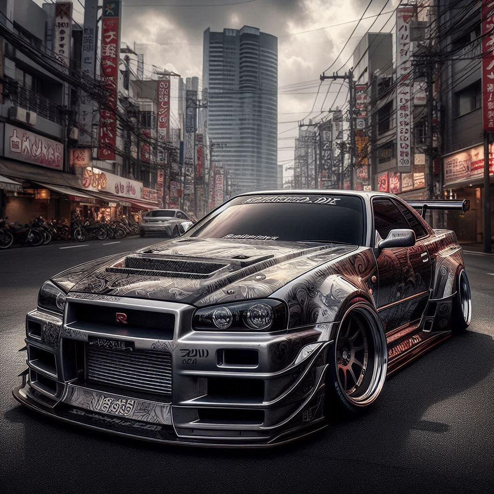

The Nissan Skyline R34 GTR was featured in the movie franchise (Fast and Furious). It was driven by Paul Walker and other people. Made from 1999-2002.They are very expensive nowdays and are a rare find. Its nicknamed Godzilla. This model is illegal in the USA because it did not pass the Federal Motor Vehicle Safety Standards set under the Imported Vehicle Safety Compliance Act of 1988, but there are some exceptions for exhibition and display purposes.
The Skyline has 4 wheel steer and 4 wheel drive. The engine is In-line 6-cyl, twin turbo. 6 speed manual transmission. Goes up to 165mph. It has 276 horsepower. If customized the specs could be even better. It can go to 60mph in 4.8 secs. It has 9x18 in wheels. Ventilated brake discs front and rear. Multi-link, coil springs, passive dampers, anti-roll bar for front and rear suspension.
The GTRs were first started during the 1960s and where manufactured in Japan. The latest model of the GTR are the Nismos and the look of the car has evolved as well as the engines and etc. It used to be 50,000 pounds (British Pound), but now is worth about 6 figures. It went from a sports car to a supercar. It was never produced for US Markets. The name Skyline refers to the optimistic spirit of postwar Japan. GTR stands for Grand Turismo Racer.
Heres an AI generated art of a Skyline
if you want to buy one, check this out Bring A Trailer
Created by: Hassan